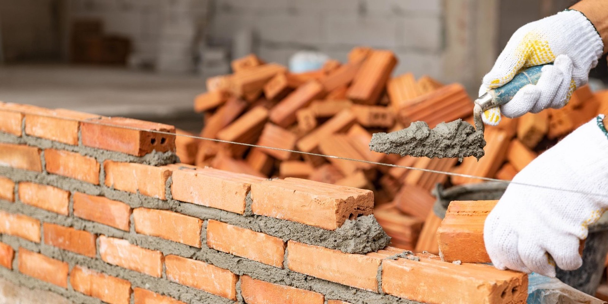

Стены, перегородки, коробка дома
Каменные работы в Калининграде
Выполняем кладку стен и перегородок для частных домов, коттеджей и сопутствующих построек. Работаем с газоблоком, керамическим блоком, кирпичом и комбинированными решениями.
- Кладка по проекту
- Контроль геометрии
- Работаем по этапам
Состав каменных работ

На что обращаем внимание
- Точная геометрия и вертикали по каждому ряду.
- Правильная перевязка и усиление узлов.
- Подготовка проемов и сопряжений под дальнейшие этапы.
- Контроль влажности, швов и качества основания.
Что влияет на стоимость кладки
FAQ по каменным работам
Да, каменные работы можно выполнить как отдельный этап без полного строительства дома под ключ.
Да, подскажем разницу между газоблоком, керамикой и кирпичом с учетом бюджета и задачи.
Да, можем работать по готовому проекту или по согласованным конструктивным решениям.
Нужен расчет кладки или коробки дома
Опишите площадь, материал и этажность. Подготовим ориентир по стоимости и срокам работ.
Контакты
Оставьте заявку на кладку стен, коробку дома или консультацию по материалам.
+7(921)618-23-77- Telegram: @CKcaizer
- Email: info@sk-kaizer.ru